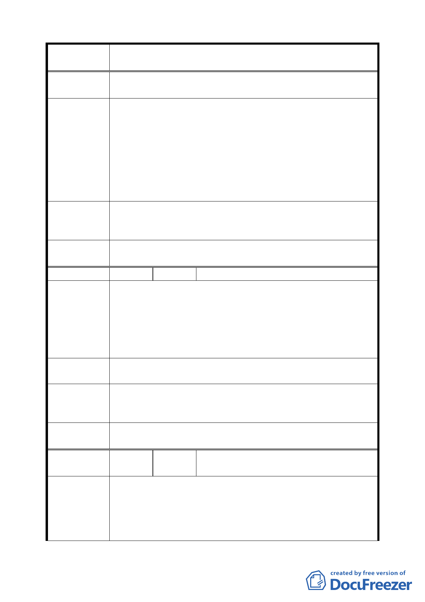

案 名 臺北市文山區都市計畫通盤檢討（主要計畫）案
（ 主 興 7 ） （空白）
文山區都市計畫通盤檢討「主興 7」案，變更師專用地為公
園用地及住宅區案，此師專用地自規劃為公共設施用地時，
全體地主即長期甚或一輩子遭受損害，土地無法利用又需負
建議辦法
管理之責，政府又不徵收，現政府亦不作師專用地，既以檢
討都市計畫認為本師專用地需作公園用地使用及住宅區，為
何政府不編列預算徵收公園造福百姓，住宅區依法規定開放
于人民使用，也算還給地主一個公道，為何利用政策及公權
力來強迫人民捐地給政府，那豈不變成魚肉百姓的政府。
專案小組
審 查 結 論 同編號 9。
（94.12.21）
委員會議
決議
同編號 9。
編 號 １３ 陳情人 國防部軍事安全總隊（09430082800）
建議位置：文山區興安段四小段 87-1、88-1 地號（興隆路三
段 304 巷 24 號）。
陳 情 理 由 建議理由：
（ 主 興 7 ） 本總隊現有 871 及 881 地號之原現有使用分區為學校用地，
都市計畫內容將上述地號使用分區改為住宅區，勢必會造成
營區被切成二部分。
建議辦法
目前本總隊因任務需要，需繼續使用該用地，建議將上述 2
筆地號之使用分區變更為機關用地，以符實際需求。
專案小組
審 查 結 論 同編號 9。
（94.12.21）
委員會議
決議
同編號 9。
編
號 １４
陳情人
國防部軍備局工程營產中心北部地區營
產管理處（09430080600）
建議位置：公訓段二小段 49-1、50-1、64、65、66、67、68、
陳情理由
（興隆）
69、69-1、70、70-1、71、198 地號等 13 筆土地。
建議理由：
一、上開土地目前為空軍臺北通信大隊、憲兵 202 指揮部使
用，臺北通信大隊負責空軍整體防空作戰有線電、無線
一〇